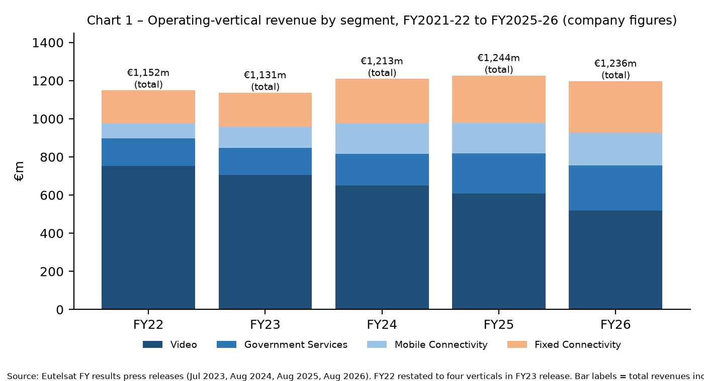
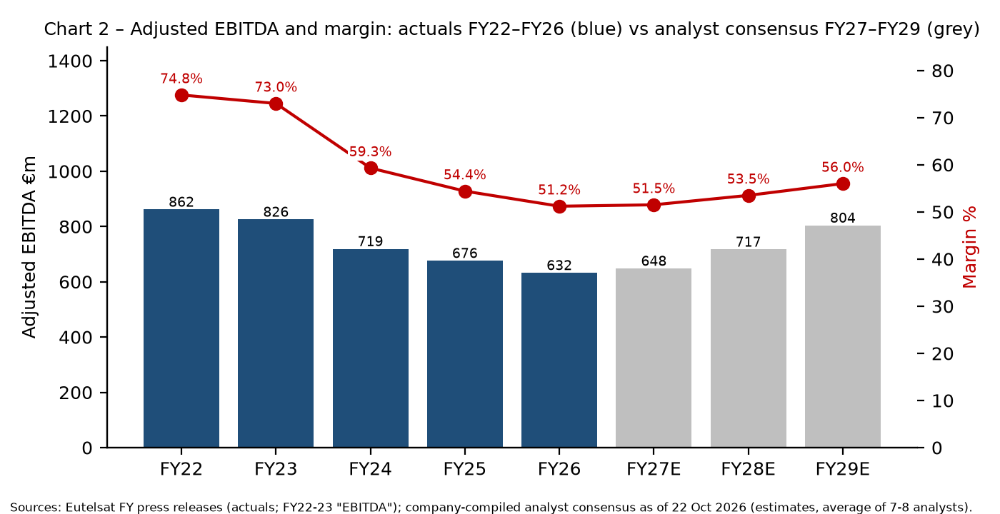
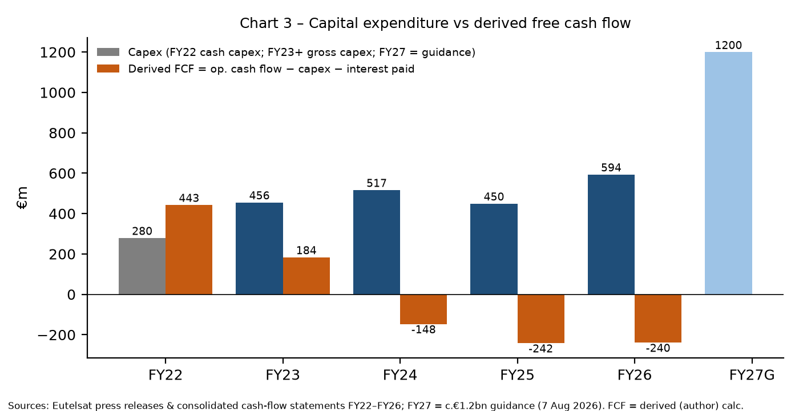
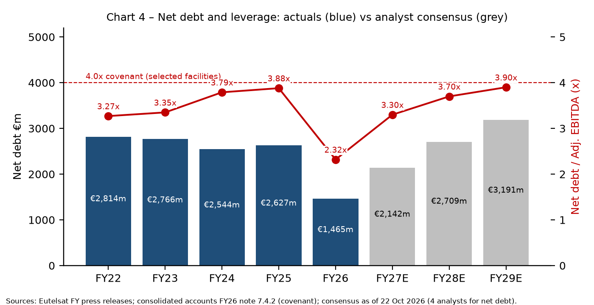
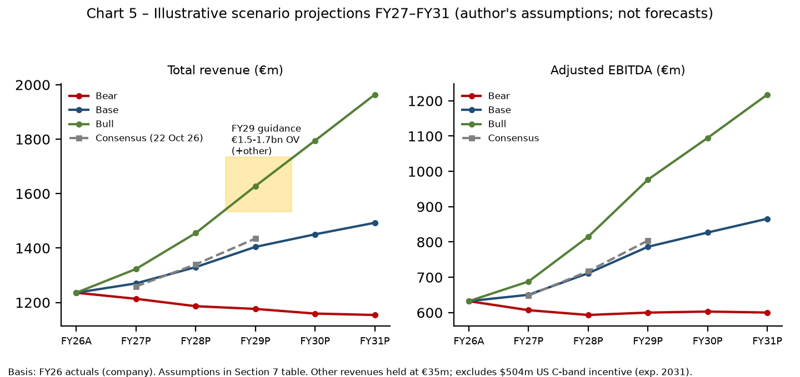

Eutelsat Group
(Eutelsat Communications SA, incl. Eutelsat OneWeb)
Detailed Financial Analysis: Revenue, Costs, OneWeb Renewal & IRIS² Investment, Balance Sheet and Outlook
Data cut-off: 28 October 2026 (America/Los_Angeles)
Latest reported period: FY2025-26 (year ended 30 June 2026), published 7 August 2026
Q1 FY2026-27 revenues are scheduled for 29 October 2026 (after this cut-off; consensus shown instead)
Labelling convention used throughout:
[Company] = figures reported by Eutelsat | [Consensus/Analyst] = third-party estimates | [Derived] = author's own calculation from cited figures | [Illustrative] = author's scenario projections, not forecasts
Prepared by Grok Bot. For information only; not investment advice. Source references [R#] are clickable and listed with dates at the end.
Executive summary
Eutelsat is mid-way through a costly transition from a high-margin but structurally declining GEO video business to a capital-intensive LEO connectivity model (OneWeb, then IRIS²). FY2025-26 showed the pivot working at the top line but not yet at the margin or cash-flow level, while a state-anchored €1.5bn equity raise and €5bn refinancing have removed near-term solvency risk at the cost of a sharply heavier capex profile from FY2026-27 onward.
Key findings
- Revenue mix is flipping: FY2025-26 total revenues €1,235.9m (−0.6% reported, +3.0% like-for-like); operating-vertical revenues €1,197.1m. LEO revenues rose 69.5% LFL to €297.0m, now c.25% of revenues vs c.15% a year earlier, while Video fell 13.1% LFL to €519.2m [R1]. [Company]
- Profitability has compressed: Adjusted EBITDA €632.4m, margin 51.2% (vs 54.4% in FY25, 59.3% in FY24 and 74.8% in FY22) [R1, R9, R11]. The decline reflects OneWeb's cost base, Russian-channel sanctions and lower-margin LEO product mix [R1]. Net loss (group share) narrowed to −€457.3m from −€1,081.9m, the latter driven by €720m of goodwill and satellite impairments [R1]. [Company]
- Capex step-up: Gross capex €593.9m in FY26 (below the €900m flagged at H1) but guided to c.€1.2bn in FY27, within a c.€4bn FY2026-29 plan [R1]. On top: 229 extra OneWeb satellites (~€1bn) [R18] and an IRIS² commitment raised to €2.23bn shared + €1.16bn commercial infrastructure (2027-2034) [R14]. Author's derived FCF (operating cash flow − gross capex − interest paid) was −€240m in FY26 and −€243m in FY25 [R3, R8]. [Derived]
- Balance sheet repaired, for now: The €1.5bn capital increase (gross €1,497.8m; net €1,469.2m) cut net debt to €1,464.6m and leverage to 2.32x at June 2026 from 3.88x [R1, R3]. Weighted average debt maturity rose to 4.2 years; liquidity c.€2.3bn plus c.€690m undrawn ECA facility [R1]. The French State is now the largest shareholder at 29.65% [R13, R12]. [Company]
- Guidance vs consensus: FY27: slight growth in operating-vertical revenues, LEO up >30%, EBITDA margin broadly stable; FY29 revenues €1.5–1.7bn with EBITDA margin above 60% (at €/$1.12) [R1]. This is below the c.65% FY29 margin target shown in the March 2026 investor presentation [R12]. Analyst consensus (22 Oct 2026) is more cautious: FY29 total revenue €1,435m, EBITDA €804m (56.0%), net debt/EBITDA rising to 3.9x [R4]. [Company vs Consensus]
- IRIS² is now a firm but distant driver: IRIS² Rendez-Vous 1 closed on 6–7 Aug 2026: constellation enlarged to 348 satellites (330 LEO + 18 MEO), first launches 2029, commercial Ku LEO fully operational by mid-2032; Eutelsat leads the LEO segment and estimates >€10bn revenues from its IRIS² capacity over 2032-2040 [R14, R15]. [Company/ESA]
- Market is sceptical: Share price €1.967 on 28 Oct 2026 [R23]; derived market cap ≈ €2.3bn on 1,178.3m shares [R3] [Derived]. Consensus average target €1.9 (range €0.3–2.4, 7 analysts) [R4]; Berenberg Hold, €2 [R21]. In the author's illustrative scenarios FY29 revenue ranges €1.18bn (bear) to €1.63bn (bull), with base ≈ €1.40bn, close to consensus [Illustrative].
1. Company overview and structure
Eutelsat Communications SA (Euronext Paris / LSE: ETL) is the Paris-headquartered parent of the group formed by the combination with OneWeb, effective 28 September 2023, making it the first fully integrated GEO-LEO operator [R3]. At FY26 it operated 31 geostationary satellites and a LEO constellation of more than 600 satellites (around 650 per the financial statements), distributing c.5,800 TV channels and employing more than 1,600 people in 75+ countries [R1, R3]. The fiscal year runs 1 July–30 June [R3]. [Company]
1.1 Business model and segments
- Video (43% of FY26 operating-vertical revenue): GEO broadcast/DTH distribution and professional video; structurally declining and hit in FY26 by sanctions on Russian channels and termination of Express AT1/AT2 capacity contracts [R1].
- Connectivity (57%): Government Services, Mobile Connectivity (aero, maritime) and Fixed Connectivity (enterprise, backhaul, broadband), delivered over GEO and OneWeb LEO. LEO accounted for >40% of Connectivity in FY26 [R1].
- Other revenues (€38.8m in FY26) include IRIS² system-development revenue recognised as Consortium System Development Prime, plus hedging effects [R1].
1.2 Key corporate events 2023–2026
Date | Event | Source |
28 Sep 2023 | Eutelsat–OneWeb combination effective | [R3] |
16 Dec 2024 | IRIS² 12-year concession signed between EC and SpaceRISE (Eutelsat, SES, Hispasat) | [R16] |
Dec 2024 | First batch of 100 Gen-1 follow-on OneWeb satellites ordered from Airbus | |
Jun–Jul 2025 | €1.35bn capital raise announced (19 Jun), raised to €1.5bn with UK participation (10 Jul) | |
16 Sep 2025 | S&P ratings withdrawn at Eutelsat's request | [R19] |
21 Nov 2025 | €828m reserved capital increases at €4.00/share completed | [R13] |
Nov 2025 | €900m senior bank facility (€400m term loan + €500m RCF) | [R3] |
12–16 Dec 2025 | €670m rights issue at €1.35/share (133% subscribed) settled | [R13] |
12 Jan 2026 | 340 further OneWeb satellites ordered from Airbus (total up to 440) | [R17] |
29 Jan 2026 | French government did not approve sale of passive ground infrastructure to EQT; deal lapsed | [R3] |
Feb 2026 | c.€1bn ECA-backed facility; €1.5bn bonds (€850m 5.75% 2031, €650m 6.25% 2033) | |
Jun 2026 | CENTAURE call-off (first under €1bn NEXUS framework with French Armed Forces) | [R1] |
27 Jul 2026 | FCC Upper C-band order: Eutelsat expects $504m (€443m) pre-tax incentive payments, expected during 2031 | [R1] |
6–7 Aug 2026 | IRIS² Rendez-Vous 1 concluded; Eutelsat confirmed LEO segment lead | |
10 Sep 2026 | ATP for 229 additional OneWeb satellites (~€1bn); 669 new satellites in total with Airbus | [R18] |
Sources as indicated. [Company] unless noted.
1.3 Shareholders and the 2025 recapitalisation
The €1.5bn equity raise comprised €828m of reserved capital increases at €4.00 per share subscribed by the French State (via APE), Bharti Space, the UK Government, CMA CGM and FSP, followed by a c.€670m rights issue at €1.35 per share (496.1m new shares). Total subscriptions by anchor investors: French State €749m, UK Government €163m, Bharti Space €150m, CMA CGM €150m, FSP €91m [R13]. Share capital rose to 1,178,308,106 shares [R13, R3]. Gross proceeds were €1,497.8m, with €28.6m of costs [R3]. Before the raise, APE acquired the stake previously held by Bpifrance Participations (3 Jul 2025) [R12]. [Company]
Shareholder (post-raise) | % capital & voting rights |
French State (APE) | 29.65% |
Bharti Space Ltd | 17.88% |
UK Government (DSIT) | 10.89% |
CMA CGM Participations | 7.46% |
Fonds Stratégique de Participations (FSP) | 4.99% |
Other shareholders / free float (incl. treasury, SoftBank) | 29.13% |
Source: FY2024-25 results press release (expected post-raise structure) [R7]; March 2026 investor presentation (actual) [R12]; "other" category note per [R13]. Core strategic/government shareholders c.70%. The reserved-capital-increase investors stated they would not be in a position to launch a takeover [R7].
2. Revenue analysis
2.1 Multi-year revenue by segment
€m (reported) | FY21-22 | FY22-23 | FY23-24 | FY24-25 | FY25-26 |
Video | 752.2 | 704.8 | 650.6 | 608.2 | 519.2 |
Government Services | 144.4 | 143.4 | 165.3 | 211.0 | 235.5 |
Mobile Connectivity | 79.9 | 110.1 | 159.3 | 159.7 | 172.4 |
Fixed Connectivity | 171.9 | 177.8 | 234.1 | 247.3 | 270.0 |
Total operating verticals | 1,148.3 | 1,136.1 | 1,209.4 | 1,226.3 | 1,197.1 |
Other revenues | 3.3 | (4.8) | 3.7 | 17.5 | 38.8 |
Total revenues | 1,151.6 | 1,131.3 | 1,213.0 | 1,243.7 | 1,235.9 |
o/w LEO (in Connectivity) | n/a | n/a* | 93.8 | 186.8 | 297.0 |
o/w GEO Connectivity | n/a | n/a | 464.9 | 431.3 | 380.9 |
Average EUR/USD | 1.14 | 1.04 | 1.08 | 1.08 | 1.17 |
Sources: FY22 restated to four verticals in FY23 release [R10, R11]; FY23–FY24 [R9]; FY24–FY25 [R7]; FY26 [R1]. *OneWeb was an equity-accounted associate until Sep 2023, so no consolidated LEO revenue before FY24. [Company]

Chart 1. Sources: [R1, R7, R9, R10].
2.2 Segment dynamics (FY2025-26 vs FY2024-25, like-for-like)
Segment | FY26 €m | Reported | LFL | Driver (company commentary) |
Video | 519.2 | −14.6% | −13.1% | Market decline, Russian-channel sanctions, Express AT1/AT2 termination |
Government Services | 235.5 | +11.6% | +17.7% | CENTAURE/NEXUS revenue recognition, non-US governments, Ukraine |
Mobile Connectivity | 172.4 | +7.9% | +15.9% | Aero strength (LEO & GEO); maritime LEO offset by GEO softness |
Fixed Connectivity | 270.0 | +9.2% | +15.6% | LEO-enabled solutions; GEO more challenging; Q4 catch-up |
LEO (all verticals) | 297.0 | +59.0% | +69.5% | "Beat expectations"; Q4 €124.3m incl. NEXUS start |
GEO Connectivity | 380.9 | −11.7% | −6.6% | Structural pressure on GEO data/broadband |
Source: FY2025-26 results press release [R1]. LFL = constant currency, excluding hedging. [Company]
Derived observations: LEO revenue grew from €93.8m (FY24) to €297.0m (FY26), a reported two-year CAGR of ≈78% [Derived from R7, R1]. LEO was 24.8% of operating-vertical revenue in FY26 (€297.0m / €1,197.1m) [Derived]. Video has fallen ≈31% since FY22 (€752.2m → €519.2m) [Derived from R10, R1]. Q4 FY26 total revenue was €351.3m, with LEO more than doubling year on year to €124.3m, giving a strong exit run-rate into FY27 [R1]. The €51m currency drag in FY26 (EUR/USD 1.17 vs 1.08) is material because a large part of revenue is USD-denominated [R1].
2.3 Backlog
Backlog | FY21-22 | FY22-23 | FY23-24 | FY24-25 | FY25-26 |
€bn | 4.0 | 3.4 | 3.9 | 3.5 | 3.4 |
Years of prior-year revenue | – | 3.0 | – | 2.8 | 2.7 |
Connectivity share | – | – | – | 57% | 61% |
Sources: [R11, R10, R9, R7, R1]. Backlog excludes pay-as-you-go contracts; LEO contracts are shorter than legacy GEO contracts [R1]. [Company]
2.4 Key contracts and commercial wins
- Defence/sovereign – French Armed Forces NEXUS framework: €1.0bn framework for LEO services announced with FY25 results [R7]. First call-off CENTAURE (DGA, June 2026): maximum value €350m over up to eight years, initial firm commitment €138m over four years [R1, R2].
- Ukraine – Government revenue growth reflects "service delivered in Ukraine" [R1]. Reuters reported in April 2025 that Germany funded Eutelsat internet services in Ukraine [R26]. A secondary aggregator noted renewed investor focus on OneWeb after mid-October 2026 reports on Starlink/Starshield restrictions in Ukraine, but no replacement contract was confirmed [R22]. Contract values for Ukraine are not disclosed in the sources reviewed.
- Aviation – JAL and LATAM in-flight connectivity agreements via distribution partner SES; Anuvu multi-year GEO (EUTELSAT 10B) deal [R1].
- Maritime – AST Networks multi-year multi-million-dollar LEO deal; Tototheo (Greece) partner agreement [R1].
- Enterprise/fixed – Voimatel (Finland) LEO services incl. Arctic coverage [R1]; EXATEL (Poland) OneWeb distribution and Amprion offshore connectivity via EuroSkyPark, reported Oct 2026 [R22, secondary].
- Bharti/Airtel – Bharti (Airtel group) is the second-largest shareholder at 17.88% and the OneWeb India entity (with Exim India facilities) is consolidated [R3, R12]. No specific Airtel commercial contract value was found in the primary sources reviewed for FY26; treat as a gap.
- Video – Qatar Media Corporation MENA distribution renewal on EUTELSAT 7 West A (Oct 2026; terms undisclosed) [R22, secondary].
3. Costs and profitability
€m | FY21-22 | FY22-23 | FY23-24 | FY24-25 | FY25-26 |
Revenues | 1,151.6 | 1,131.3 | 1,213.0 | 1,243.7 | 1,235.9 |
Operating expenses | (290.1) | (305.9) | (494.1) | (567.6) | (603.6) |
Adjusted EBITDA* | 861.6 | 825.5 | 718.9 | 676.2 | 632.4 |
Adj. EBITDA margin | 74.8% | 73.0% | 59.3% | 54.4% | 51.2% |
Depreciation & amortisation | (481.7) | (455.5) | (702.1) | (808.3) | (699.3) |
Other operating income/(expense) incl. impairments | 44.9 | 203.5 | (208.2) | (777.0) | (153.2) |
Operating result | 424.8 | 573.5 | (191.3) | (909.2) | (220.1) |
Financial result | (64.9) | (91.3) | (123.9) | (201.0) | (232.5) |
Net result, group share | 230.8 | 314.9 | (309.9) | (1,081.9) | (457.3) |
Sources: [R10] (FY22–FY23), [R9] (FY24), [R7] (FY25), [R1, R3] (FY26). *FY22–FY23 labelled "EBITDA"; FY24 objective-basis EBITDA was €697.5m [R9]. [Company]

Chart 2. Sources: [R1, R7, R9, R10, R11] actuals; [R4] consensus.
3.1 Interpretation
- Operating expenses roughly doubled from €290.1m (FY22) to €603.6m (FY26) [R10, R1], mainly from consolidating OneWeb's operating cost base from FY24 and, in FY26, higher cost of goods sold (LEO terminals/services mix), partly offset by share-based compensation revaluation [R1, R9]. [Derived/Company]
- FY26 split: operating costs €239.9m and SG&A €363.7m [R3]. [Company]
- Impairments: FY25 included €535m goodwill impairment on GEO assets and €186m satellite impairments (≈€720m total) [R7, R1]; FY26 included €111.3m satellite impairments (K-VHTS €91.8m, 7°E €19.5m) and €66.9m on E113WX after early termination of the Thales Alenia Space contract (with €15.8m compensation) [R3]. [Company]
- D&A fell to €699.3m in FY26 from €808.3m, reflecting longer LEO constellation useful life after the 340-satellite procurement secured operational continuity, plus the end of some intangible amortisation [R1]. This is an accounting benefit, not a cash saving. [Company]
- Financial result worsened to −€232.5m (cost of net debt €194.3m) on higher interest costs and refinancing effects including €33.7m early-repayment penalties [R3]. Average cost of debt after hedging 4.37% [R1]. [Company]
- Goodwill tests: GEO test (WACC 8.2%, perpetual growth −2.5%) showed €250m headroom; LEO test projects cash flows to 2040 and depends on IRIS² execution and financing [R3]. [Company]
3.2 Free cash flow
€m | FY21-22 | FY22-23 | FY23-24 | FY24-25 | FY25-26 |
Net cash flow from operating activities | 800.9 | 734.9 | 505.6 | 383.1 | 508.9 |
Capex (FY22 cash capex; FY23+ gross capex) | (279.5) | (455.6) | (517.1) | (449.8) | (593.9) |
Interest and other fees paid | (78.3) | (95.3) | (136.1) | (175.8) | (154.6) |
Derived FCF [Derived] | 443.1 | 184.0 | (147.6) | (242.5) | (239.6) |
Company "Discretionary FCF" (old definition) | 443.2 | 462.4 | n/a | n/a | n/a |
Company "Discretionary cash flow" (FY25+ segment note) | – | – | – | (458.9) | (587.1) |
Sources: [R10] (FY22–FY23 cash flow and DFCF), [R9] (FY23 restated gross capex), [R8] (FY24–FY25 cash flow), [R3] (FY26). The derived FCF row is the author's calculation; FY23 differs from the company DFCF because gross capex (incl. lease repayments) replaces cash capex. FY25+ "discretionary cash flow" is a company-defined capex/financing metric in note 5 [R3] and is not comparable.
4. Capex and investment programme
€m | FY21-22 | FY22-23 | FY23-24 | FY24-25 | FY25-26 | FY26-27 guide |
Cash capex | 279.5 | 270.5 | 463.2 | – | – | – |
Gross capex | – | 455.6 | 517.1 | 449.8 | 593.9 | c.1,200 |
Sources: [R11, R9, R7, R1]. Gross capex = acquisitions of satellites/PP&E/intangibles + lease repayments, net of insurance [R1]. FY26 was below the c.€900m expected at H1 because of milestone phasing [R1, R12]. [Company]

Chart 3. Sources: [R1, R3, R8, R9, R10, R11]. FCF is [Derived].
4.1 OneWeb Gen-1 continuity / replacement
- 100 satellites ordered from Airbus in December 2024 and 340 more in January 2026, for up to 440 in total; built in Toulouse on a new line, with deliveries from end-2026 and upgrades such as digital channelisers and hosted-payload capability [R17].
- Company capex roadmap: "~€2bn to ensure Gen-1 continuity and complete Gen-1 global coverage between FY2024-25 and FY2028-29"; launch plan of 100 by 2027 and 340 by 2029 [R12]. Partly financed by a c.€1bn ECA facility backed by Bpifrance [R12, R3, R25]; €280.7m drawn at June 2026 [R3].
- 10 Sep 2026: ATP signed for a further 229 satellites (estimated €1bn investment) to extend and expand OneWeb through 2034, bringing new Airbus-built OneWeb satellites to 669. The company says this does not change capex to FY2029 [R18].
- Ground and terminals: the plan includes more Satellite Network Portals, 40–50k user terminals deployed globally by 2028, and a full transition to 5G [R12].
4.2 Next-generation LEO and IRIS² capex
Eutelsat's March 2026 materials say IRIS² "replaces the need for Next-Gen", with Eutelsat's capex contribution originally c.€2bn, mostly from FY2027-28 [R12]. After Rendez-Vous 1 (Aug 2026) the commitment rose to €2.23bn for shared IRIS² infrastructure plus €1.16bn for commercial infrastructure (Ku payload and commercial ground), phased over 2027–2034 [R14]. Derived: total Eutelsat IRIS²-related commitment ≈ €3.39bn, about €1.4bn above the earlier c.€2bn; adding the ~€1bn for 229 satellites gives ≈ €2.4bn of extra commitments, in line with Berenberg's estimate of an additional €2.4bn of capex, mostly after FY2029 [R14, R18, R21]. [Derived]
4.3 GEO programmes
Going forward, GEO capex is limited to service continuity [R7]. In FY26 the E113WX satellite contract with Thales Alenia Space was terminated early [R3]. The company cites "increased vigilance on GEO capex" and future capex savings of more than €100m [R12]. Eutelsat and ClearSpace have also signed exploratory agreements on life-extension missions for GEO satellites (Oct 2026) [R22, secondary]. [Company/secondary]
4.4 Summary of disclosed investment commitments
Programme | Amount | Timing | Source |
Medium-term plan (all capex) | c.€4bn | FY2026–FY2029 | |
FY2026-27 gross capex guidance | c.€1.2bn | FY27 | [R1] |
OneWeb Gen-1 continuity (440 sats, Airbus) | ~€2bn (company roadmap) | FY25–FY29 | |
229 additional OneWeb satellites | ~€1bn | through 2034 | [R18] |
IRIS² shared infrastructure (Eutelsat share) | €2.23bn | 2027–2034 | [R14] |
IRIS² commercial infrastructure (Ku payload, ground) | €1.16bn | 2027–2034 | [R14] |
ECA-backed financing (funding source) | c.€1bn (c.€690m undrawn at Jun-26) | amortising 2028–2034 | |
US C-band incentive (inflow) | $504m / €443m pre-tax | expected 2031 | [R1] |
[Company] figures; categories overlap (the €4bn plan contains part of the Gen-1 and IRIS² spend), so the rows should not be added together.
5. IRIS²: programme, Eutelsat role, economics and risks
5.1 Programme
- The EU concession for IRIS² (Infrastructure for Resilience, Interconnectivity and Security by Satellite) was signed on 16 Dec 2024 with SpaceRISE (SES, Eutelsat, Hispasat): a 12-year concession, initially a 290-satellite multi-orbit (LEO + MEO) constellation, with the EU as anchor customer and governmental and commercial services by 2030 [R16].
- Eutelsat describes a secured framework with total funding of €10.6bn, of which 60% public [R12]. [Company]
- Rendez-Vous 1 (negotiations Jan–Aug 2026) concluded 6 Aug 2026; an implementation agreement was signed 7 Aug. It adds a layer of 66 high-LEO satellites, bringing the main constellation to 348 (330 LEO + 18 MEO). First launches are targeted for 2029, and secure governmental capacity rises by 60% within the EU [R15]. Extra funding comes from the EU 2028–2034 budget and Member States: Poland €656m, Hungary €500m, Spain €1.6–2bn announced [R15]. A revised total programme budget figure was not found in the sources reviewed. [ESA]
- Industrial team: Airbus DS, Thales Alenia Space, OHB, Aerospacelab and others [R15]. Thales reportedly booked IRIS² government payload supply in Q3 2026 (Reuters via secondary) [R22].
5.2 Eutelsat's role and economics
Item | Value | Source |
Role | Lead of the LEO segment (design, deployment, operation); Consortium System Development Prime | |
LEO satellites under Eutelsat lead | 264 dual Mil-Ka/Ku + 66 Mil-Ka | [R14] |
Eutelsat investment | €2.23bn shared + €1.16bn commercial, 2027–2034 | [R14] |
Capacity access | More than twice current OneWeb capacity | |
Revenue estimate (company) | >€10bn over 2032–2040 (earlier: ≥€6.5bn over the 12-year concession) | |
Timing | First Ka-only launches from 2029; commercial Ku LEO fully operational by mid-2032 | [R14] |
FY26 P&L impact | IRIS² development revenue in "Other revenues" (€38.8m total, incl. €7m hedging) | [R1] |
[Company]; revenue estimates are management projections, not contracted backlog.
5.3 Risks
- Execution and schedule: a 348-satellite multi-orbit system with first launches in 2029; launch availability in Europe; supply-chain readiness.
- Funding: public funding beyond 2027 depends on the next EU Multiannual Financial Framework and appropriations [R16]. Eutelsat's €3.39bn commitment falls mostly after FY2029, when consensus already sees leverage near 3.9x [R4, R21].
- Commercial: the >€10bn revenue estimate depends on commercial take-up against Starlink and Amazon's LEO service in the early 2030s; revenue does not start in earnest until 2032.
- Governance: three-operator consortium with shared fixed costs; Eutelsat bears the LEO lead execution risk.
6. Balance sheet and financing
€m | Jun-22 | Jun-23 | Jun-24 | Jun-25 | Jun-26 |
Net debt | 2,814.4 | 2,765.7 | 2,544.4 | 2,626.6 | 1,464.6 |
Net debt / Adj. EBITDA | 3.27x | 3.35x | 3.79x | 3.88x* | 2.32x |
Total shareholders' equity | – | – | 3,912.9 | 2,661.1 | 3,686.6 |
Cash & equivalents | – | – | 837.4 | 517.8 | 1,762.9 |
Sources: [R11, R10, R9, R7, R1, R3]. *4.03x on financing-documentation basis incl. held-for-sale liabilities [R7]. Leverage was 2.00x at Dec-2025 [R1]. [Company]

Chart 4. Sources: [R1, R3, R7, R9, R10, R11]; consensus [R4].
6.1 Debt structure at 30 June 2026
Instrument | €m | Rate | Maturity |
EIB bullet loan | 200 | 1.26% | Dec 2028 |
Bank term loan (Nov-2025 facility) | 400 | Variable | Nov 2028 |
2028 bond (Eutelsat SA) | 600 | 1.50% | Oct 2028 |
2031 bond (Eutelsat Communications) | 850 | 5.75% | Mar 2031 |
2033 bond (Eutelsat Communications) | 650 | 6.25% | Mar 2033 |
ECA-backed export facility (drawn) | 281 | – | Amortising from Jun 2028; final Jun 2034 |
Capex credit facility | 53 | Variable | Jun 2027 |
Operating credit facility (OneWeb India) | 15 | 8.50–8.55% | Apr 2027 |
RCF (undrawn) | 500 undrawn | – | – |
Source: FY26 consolidated accounts note 7.4.2 [R3]. Repaid in FY26: €600m 2.25% 2027 bond, €600m 9.75% 2029 bond, €177m 2025 bond, €400m 2027 term loan, SMBC €273.9m [R3]. Covenant: net debt/adj. EBITDA ≤ 4.0x on the EIB loan, 2028 term loan, RCF and ECA facility [R3]. Change-of-control clauses on bonds and loans [R3]. [Company]
- Maturity wall: 2028 is the key year, with ≈€1.2bn of principal (EIB €200m + term loan €400m + 2028 bond €600m) [R3]. Contractual cash flows in the year to June 2029 are €1,390.8m [R3]. [Derived/Company]
- Liquidity: undrawn lines plus cash c.€2.3bn, plus c.€690m undrawn ECA [R1]; weighted average maturity 4.2 years (2.5 years a year earlier) [R1].
- Ratings: Moody's Ba3/Stable (Eutelsat Communications; senior unsecured Ba3 at Eutelsat SA); Fitch BB/Stable for both entities; S&P withdrawn 16 Sep 2025 [R19].
- Equity: €1,469.2m net from the capital increase in FY26 [R3]. Under the underwriting agreement, the company and anchor shareholders agreed to 180-day lock-ups from December 2025 [R13].
7. Guidance, consensus and scenario analysis
7.1 Company guidance (as of 7 Aug 2026)
Metric | FY2026-27 | FY2028-29 |
Operating-vertical revenues | Slight growth vs €1,197.1m | €1.5–1.7bn (at €/$1.12) |
LEO revenues | Growth > 30% | Outperforming market |
Adjusted EBITDA margin | Broadly the same as FY26 (51.2%) | Above 60% |
Gross capex | c.€1.2bn | c.€4bn cumulative FY26–FY29 |
Leverage | No explicit target published in FY26 release | – |
Source: [R1, R2]. Earlier targets: March 2026 presentation showed FY29 EBITDA margin c.65% and FY26 leverage c.2.7x [R12]. Assumes no further sanction impacts, nominal launches and no in-orbit incidents [R1]. [Company]
7.2 Analyst consensus (company-compiled, 22 Oct 2026)
€m (average) | FY26 actual | FY27E | FY28E | FY29E |
Video | 519.2 | 470 | 433 | 402 |
Government Services | 235.5 | 265 | 320 | 386 |
Fixed Connectivity | 270.0 | 292 | 314 | 341 |
Mobile Connectivity | 172.4 | 192 | 229 | 264 |
o/w LEO | 297.0 | 400 | 542 | 677 |
o/w GEO connectivity | 380.9 | 361 | 338 | 331 |
Total operating verticals | 1,197.1 | 1,222 | 1,298 | 1,387 |
Total revenues | 1,235.9 | 1,259 | 1,340 | 1,435 |
Adjusted EBITDA | 632.4 | 648 | 717 | 804 |
EBITDA margin | 51.2% | 51.5% | 53.5% | 56.0% |
Gross capex | 593.9 | 1,199 | 1,118 | 1,119 |
Net debt | 1,464.6 | 2,142 | 2,709 | 3,191 |
Net debt / EBITDA | 2.32x | 3.3x | 3.7x | 3.9x |
Price target (€) | 1.9 avg / 2.0 median (range 0.3–2.4; 7 analysts) |
Source: [R4] (Consensus/Analyst estimates; 4–8 contributors per line). FY26 actuals from [R1].
Q1 FY2026-27 (to be published 29 Oct 2026, 18:30 CET [R5, R6]): consensus total revenue €299m (range €284–313m), operating verticals €291m, LEO €84m, Video €119m [R4] [Consensus]. That compares with Q1 FY26 reported total of €293.2m (LEO €54.1m) and Q4 FY26 of €351.3m (LEO €124.3m) [R1] [Company].
Gap between guidance and consensus: consensus FY29 operating-vertical revenue of €1,387m is below the bottom of the €1.5–1.7bn guidance range, and the consensus FY29 margin of 56.0% is below the >60% target [R1, R4]. [Derived]
Analyst views: Berenberg reinstated at Hold with a €2 target (18 Sep 2026), citing the €2.4bn of extra capex after FY29, the risk of leverage rising towards 4x, and a DCF equity value of just €343m, while seeing IRIS² as upside optionality [R21]. Morgan Stanley (via Investing.com) noted Q4 operating-vertical revenue about 10% above consensus, but the FY27 margin guidance (≈51% vs ≈54% expected) and capex (€1.2bn vs ≈€825m expected) disappointed [R20]. Media reports have Deutsche Bank at €2.10 (from €2.40, Hold) and Goldman Sachs at €1.60 (from €5.22, Neutral) [R22, secondary aggregator; not verified against primary broker notes]. [Analyst]
7.3 Illustrative scenarios FY2026-27 to FY2030-31 [Illustrative]
These are the author's projections, not forecasts. They start from FY26 reported components (Video €519.2m, GEO Connectivity €380.9m, LEO €297.0m) [R1] and use these explicit assumptions. Other revenues are held flat at €35m. The US C-band incentive ($504m, expected 2031) and any FX changes are excluded.
Assumption | Bear | Base | Bull |
Video revenue, annual change | −12% | −9% (≈ consensus trajectory) | −6% |
GEO Connectivity, annual change | −8% | −5% | −3% |
LEO growth FY27/28/29/30/31 | 25/15/15/10/10% | 35/30/25/15/12% | 45/40/35/25/20% |
Adj. EBITDA margin FY27→FY31 | 50→52% | 51.2→58% | 52→62% |
Narrative | Starlink/Amazon pricing pressure, OneWeb replenishment delays, sanctions and video churn accelerate | Guidance met in FY27; LEO slows as constellation capacity is replenished; IRIS² revenue mostly post-FY31 | Sovereign/defence demand (NEXUS, Ukraine, EU) and aero accelerate; 2029 guidance met |
[Illustrative] author assumptions; base Video/LEO paths calibrated loosely against consensus [R4].
€m | FY27P | FY28P | FY29P | FY30P | FY31P |
Bear – Total revenue | 1,214 | 1,186 | 1,176 | 1,159 | 1,154 |
Bear – o/w LEO | 371 | 427 | 491 | 540 | 594 |
Bear – Adj. EBITDA | 607 | 593 | 600 | 603 | 600 |
Base – Total revenue | 1,270 | 1,330 | 1,404 | 1,451 | 1,493 |
Base – o/w LEO | 401 | 521 | 652 | 749 | 839 |
Base – Adj. EBITDA | 650 | 712 | 786 | 827 | 866 |
Bull – Total revenue | 1,323 | 1,455 | 1,628 | 1,795 | 1,964 |
Bull – o/w LEO | 431 | 603 | 814 | 1,017 | 1,221 |
Bull – Adj. EBITDA | 688 | 815 | 977 | 1,095 | 1,218 |
[Illustrative] Derived from the assumptions above. Base FY29 revenue ≈ €1.40bn vs consensus €1.435bn [R4] and guidance €1.5–1.7bn operating verticals [R1].

Chart 5. [Illustrative] author scenarios; consensus from [R4]; FY26 actuals from [R1].
Cash-flow cross-check [Derived/Illustrative]: at FY27 consensus EBITDA of €648m [R4], capex of c.€1.2bn [R1] and interest of about €150–190m (FY26 interest paid €154.6m; cost of net debt €194.3m [R3]), pre-working-capital cash burn would be about €0.7bn. That fits the consensus rise in net debt from €1,465m to €2,142m [R4]. Leverage would then move back above 3x within a year, leaving limited headroom against the 4.0x covenant by FY29 in the consensus path (3.9x) [R3, R4].
7.4 Key drivers and risks
- Competition – Starlink's scale and pricing, and Amazon's LEO service, pressure OneWeb in enterprise, maritime and aero; GEO connectivity is also eroding (−6.6% LFL in FY26) [R1]. Eutelsat positions OneWeb as one of only two fully operational LEO networks and the only European one, focused on B2B and government [R17].
- Video decline – Video fell 13.1% LFL in FY26 [R1]; consensus has it falling to €402m by FY29 [R4]. Video still generates much of the group's GEO cash ("highly cashflow-generative") [R2].
- European sovereignty and defence demand – NEXUS/CENTAURE, Ukraine and the EU GOVSATCOM/IRIS² agenda support Government Services, which consensus sees at €386m by FY29 (+64% vs FY26) [R1, R4].
- OneWeb replenishment execution – Satellite deliveries begin end-2026 [R17]; any launch or production slip risks coverage and revenue continuity as early OneWeb satellites reach end of life.
- IRIS² execution and funding – First launches 2029, commercial Ku 2032, with Eutelsat contributing €3.39bn [R14, R15].
- Funding needs – Capex around €1.1–1.2bn a year to FY29 [R1, R4] against EBITDA of €0.65–0.8bn means sustained negative FCF. The 2028 maturity cluster (≈€1.2bn) must be refinanced, and another equity call cannot be excluded if guidance slips. Upside levers: the $504m C-band incentive in 2031 and the state-anchored shareholder base [R1, R3, R12].
- Other – Further sanctions affecting channels on the fleet (e.g., Russia), in-orbit failures (Express AT1 lost control in Mar 2026 [R3]), and USD exposure.
8. Stock and market view
Date (month-end close unless noted) | Share price (€) |
Dec 2021 | 10.74 |
Dec 2022 | 6.96 |
Dec 2023 | 4.25 |
Dec 2024 | 2.27 |
Mar 2025 (OneWeb/Ukraine rally [R28]) | 4.39 |
Dec 2025 (after €1.35 rights issue) | 1.71 |
May 2026 | 3.98 |
Aug 2026 (FY26 results month) | 1.84 |
Sep 2026 | 1.58 |
13 Oct 2026 (daily close, recent low) | 1.37 |
28 Oct 2026 (last, intraday) | 1.967 |
52-week range | 1.354 – 4.556 |
Source: Yahoo Finance ETL.PA monthly/daily chart data, accessed 28 Oct 2026 [R23]; month-end closes. Historical values appear adjusted for the Dec-2025 rights issue and may differ from quotes published at the time. [Third-party data]
- Derived market cap ≈ €2.32bn (1,178.3m shares [R3] × €1.967 [R23]); derived enterprise value ≈ €3.8bn including June-2026 net debt of €1,464.6m [R1]. Derived EV/FY27E consensus EBITDA ≈ 5.9x [R4]. [Derived]
- On results day (7 Aug 2026) the shares fell about 5% to €2.04 by 09:20 GMT (Investing.com) [R20]; Les Echos Investir reported the stock falling on unconvincing FY27 guidance [R27].
- The stock trades near the €1.9 average consensus target [R4] and well below the €4.00 reserved-capital-increase price paid by the State and anchor investors in Nov 2025 [R13]. [Derived]
- The company pays no dividend at present [R21].
Conclusions
1. The LEO pivot is real at the revenue line: LEO went from €94m to €297m in two years and is guided to grow more than 30% in FY27. However, the group remains roughly flat in total because Video and GEO Connectivity are shrinking about as fast [R1, R7].
2. Margin structure has reset: from ~75% (GEO-only) to ~51%. The equity story now rests on operating leverage lifting margins above 60% by FY29, a target that consensus (56%) does not yet believe and that management has already trimmed from c.65% [R1, R4, R12].
3. The State-led €1.5bn recapitalisation and €5bn refinancing bought time, cutting leverage to 2.32x with c.€3bn of liquidity including ECA. But a c.€4bn capex plan to FY29, plus about €4.4bn more for IRIS² and OneWeb extension through 2034, implies years of negative FCF and leverage back toward 3.5–4x on consensus [R1, R4, R14, R18].
4. IRIS² converts Eutelsat into Europe's sovereign LEO champion with a quasi-guaranteed anchor customer. Its revenue (>€10bn estimated for 2032–2040) arrives late, while its costs arrive from 2027 [R14].
5. The key monitorables are: Q1 FY27 LEO revenue vs the €84m consensus (29 Oct 2026); first deliveries and launches of the 440 replacement satellites; further NEXUS/EU/Ukraine call-offs; the 2028 refinancing; and any revision to the FY29 €1.5–1.7bn / >60% targets.
Data gaps and caveats
- Q1 FY2026-27 revenues had not been published at the cut-off (due 29 Oct 2026); consensus is shown instead.
- The Airbus contract values for the 100- and 340-satellite orders were not disclosed separately; the ~€2bn Gen-1 continuity figure is the company's programme estimate [R12].
- The total IRIS² programme budget after Rendez-Vous 1 was not found; the €10.6bn figure is the original framework [R12].
- Ukraine contract values and the Airtel/Bharti commercial relationship details were not quantified in the primary sources reviewed.
- Bloomberg, FT and some Reuters/SpaceNews articles were paywalled; Reuters items are cited by headline only. Broker target changes for DB and GS come from a secondary aggregator.
- FY22–FY23 capex used different definitions (cash vs gross), and FY22 segments are the company's restatement into the four current verticals.
- Share prices are from Yahoo Finance and may be adjusted for the rights issue.
References
[R1] Eutelsat – Full Year 2025-26 Results (press release). 7 Aug 2026. https://www.eutelsat.com/system/files/2026-08/DOC_Investors_PR-FY-2025-26-final_EN_070826.pdf
[R2] Eutelsat – Full Year 2025-26 Results presentation. 7 Aug 2026. https://www.eutelsat.com/system/files/2026-08/DOC_INVESTORS_Presentation-FY-2025-26_EN_070826.pdf
[R3] Eutelsat Communications – Consolidated financial statements at 30 June 2026. 7 Aug 2026. https://www.eutelsat.com/system/files/2026-08/DOC_INVESTORS_ECOM_Consolidated-accounts-FY26_EN_070826.pdf
[R4] Eutelsat – Analyst consensus FY2026-27 to FY2028-29 and Q1 FY2026-27 (company-compiled). 22 Oct 2026. https://www.eutelsat.com/system/files/2026-10/DOC_Investors_Eutelsat-Consensus-Q1-FY-2026-27_EN_221026.pdf
[R5] Eutelsat – Financial calendar (Q1 2026-27 revenues on 29 Oct 2026). accessed 28 Oct 2026. https://www.eutelsat.com/investors/financial-calendar
[R6] Eutelsat – Q1 2026-27 revenues call invitation. 21 Oct 2026. https://www.eutelsat.com/system/files/2026-10/DOC_Investor_INVITATION%20Q1%202026-27_EN_211026.pdf
[R7] Eutelsat – Full Year 2024-25 Results (press release). 5 Aug 2025. https://www.eutelsat.com/system/files/2025-08/DOC_Investors_PR-FY%202024_25-EN_050825.pdf
[R8] Eutelsat Communications – Consolidated accounts FY2024-25 (URD extract). Oct 2025. https://www.eutelsat.com/system/files/2025-10/DOC_Investors_ECOM-Consolidated-accounts-FY25_EN_101025.pdf
[R9] Eutelsat – Full Year 2023-24 Results (press release). 9 Aug 2024. https://www.eutelsat.com/system/files/2026-07/DOC_Investors_FY-2023-24-PR%20_EN_300624.pdf
[R10] Eutelsat – Full Year 2022-23 Results (press release). 28 Jul 2023. https://www.eutelsat.com/system/files/2025-08/DOC_Investors_FY-2022-23-PR%20_EN_300623.pdf
[R11] Eutelsat – Full Year 2021-22 Results (press release). 26 Jul 2022. https://www.eutelsat.com/system/files/2025-08/DOC_Investors_FY2021-22-PR_EN_300622.pdf
[R12] Eutelsat – Investor presentation (incl. H1 FY2025-26, shareholder structure, capex roadmap). Mar 2026. https://www.eutelsat.com/system/files/2026-03/DOC_Investors_Presentation_EN.pdf
[R13] Eutelsat – Success of c.€670m rights issue, part of €1.5bn capital raise. 12 Dec 2025. https://eutelsat-com.mynewsdesk.com/pressreleases/eutelsat-announces-the-success-of-its-c-dot-eu670-million-rights-issue-part-of-its-1-euros-5-cents-billion-capital-raise-3421359
[R14] Eutelsat – Eutelsat to play central role in delivering Europe's IRIS² connectivity infrastructure. 7 Aug 2026. https://www.eutelsat.com/media-press/media-centre/news/eutelsat-play-central-role-delivering-next-phase-europes-sovereign
[R15] ESA – IRIS² reinforced and accelerated as implementation advances. 7 Aug 2026. https://www.esa.int/Applications/Connectivity_and_Secure_Communications/IRIS2_reinforced_and_accelerated_as_implementation_advances
[R16] European Commission (DG DEFIS) – Commission takes next step to deploy the IRIS² secure satellite system. 16 Dec 2024. https://defence-industry-space.ec.europa.eu/commission-takes-next-step-deploy-iris2-secure-satellite-system-2024-12-16_en
[R17] Eutelsat – Eutelsat orders 340 more LEO satellites from Airbus. 12 Jan 2026. https://www.eutelsat.com/media-press/media-centre/news/eutelsat-procures-a-further-340-oneweb-low-earth-orbit-satellites
[R18] Eutelsat – Eutelsat procures a further 229 OneWeb LEO satellites from Airbus. 10 Sep 2026. https://eutelsat-com.mynewsdesk.com/pressreleases/eutelsat-procures-a-further-oneweb-229-leo-satellites-from-airbus-3466448
[R19] Eutelsat – Corporate & investment ratings (Moody's, Fitch; S&P withdrawn). IR document, file dated 3 Dec 2025 (posted Feb 2026). https://www.eutelsat.com/system/files/2026-02/DOC_Investors_Corporate-Rating_EN_031225.pdf
[R20] Investing.com – Eutelsat falls 5% as weaker FY27 margin outlook overshadows earnings beat. 7 Aug 2026. https://www.investing.com/news/earnings/eutelsat-narrows-annual-net-loss-guides-slight-fy27-growth-4845160
[R21] Advanced Television – Berenberg stays cautious on Eutelsat (Hold, €2 target). 18 Sep 2026. https://www.advanced-television.com/2026/09/18/berenberg-stays-cautious-on-eutelsat/
[R22] ad-hoc-news / boerse-global – Eutelsat faces split analyst verdict ahead of Q1 revenue (secondary aggregator; DB & Goldman targets). 28 Oct 2026. https://www.ad-hoc-news.de/boerse/news/unternehmensnachrichten/eutelsat-faces-split-analyst-verdict-as-contract-momentum-builds-ahead-of-q1-revenue/70425727
[R23] Yahoo Finance – ETL.PA price data (chart API, monthly closes; last price 28 Oct 2026). accessed 28 Oct 2026. https://finance.yahoo.com/quote/ETL.PA/
[R24] Reuters – Starlink rival Eutelsat orders 340 OneWeb satellites from Airbus (headline/summary; paywalled). 12 Jan 2026. https://www.reuters.com/business/media-telecom/starlink-rival-eutelsat-orders-340-oneweb-satellites-airbus-2026-01-12/
[R25] Reuters – Eutelsat secures 1 billion euros financing for OneWeb satellite procurement (headline; paywalled). 11 Feb 2026. https://www.reuters.com/business/eutelsat-secures-1-billion-euros-financing-oneweb-satellite-procurement-2026-02-11/
[R26] Reuters – EXCLUSIVE: Germany funds Eutelsat internet in Ukraine as Musk tensions rise (headline; paywalled). 4 Apr 2025. https://www.reuters.com/business/media-telecom/germany-funds-eutelsat-internet-ukraine-musk-tensions-rise-2025-04-04/
[R28] Reuters – Eutelsat in talks with EU to ramp up satellite internet to Ukraine, as shares soar (headline; paywalled). 4 Mar 2025. https://www.reuters.com/technology/space/eutelsat-shares-more-than-triple-value-investors-bet-oneweb-satellites-2025-03-04/
[R27] Les Echos Investir – Eutelsat : les perspectives 2026/27 peinent à convaincre, le titre chute. 7 Aug 2026. https://investir.lesechos.fr/actu-des-valeurs/la-vie-des-actions/eutelsat-les-perspectives-202627-peinent-a-convaincre-le-titre-chute-2246264